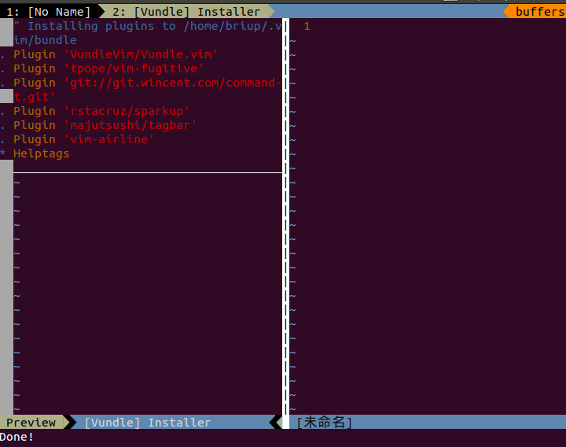
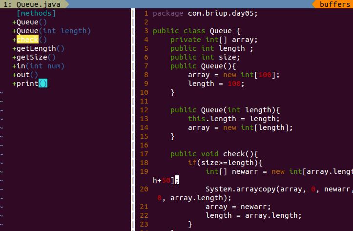
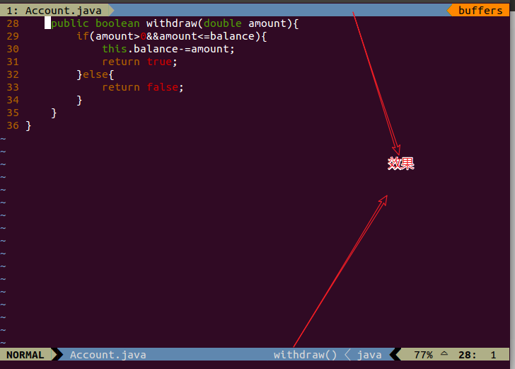

概述
我在学习Linux这段时间里，使用vim编程，为了提高自己的逼格，也为了提高自己的效率，就尝试着安装了2个插件。感觉逼格高了很多。
安装
安装其他插件之前，我们首先需要安装一个管理插件的插件，它就是Vundle，Vundle可以帮助我们管理和安装其他的插件，非常好用。
安装Vundle插件
Vundle可以在GitHub上找到，地址：https://github.com/VundleVim/Vundle.vim
1、 如果在你的Linux或者Ubuntu中没有暗转git，首先请先安装git
sudo apt-get install git
2、 使用git安装Vundle ，可以安装到~/.vim/bundle/Vundle.vim下
git clone https://github.com/VundleVim/Vundle.vim.git ~/.vim/bundle/Vundle.vim
3、 添加官方文档提供的配置信息到 ~/.vimrc 中(.vimrc 如果不存在就创建一个【vi ~/.vimrc】)：
1 |
|
注意：如果按这个文件配置，我在进行安装的时候回报错：
提示说 Plugin ‘file:///home/gmarik/path/to/plugin’ 找不到，文档中说：git repos on your local machine (i.e. when working on your own plugin) 意思是这个安装本地插件的一个目录，我这没有本地插件，所以我就把这句注释掉了。
4、 打开vim ，安装默认插件：
只在终端键入 vim，后面什么都不加
sudo vim –sudo临时提高权限，如果不加sudo，可能会遇到权限不够。
然后键入下面的命令
:PluginInstall
之后等待安装完成，[ :q ] 来退出即可
安装成功如下图所示：

安装2个常用插件
1、 tagbar
这个插件可以浏览当前文件的标签，如果想更深的了解，GitHub地址为: https://github.com/majutsushi/tagbar
效果图如下：

- 该插件安装之前需要先安装 ctags
sudo apt-get install ctags
- 添加插件和其他配置信息到 ~/.vimrc 中
1 | 进入 ~/.vimrc |
- 然后通过命令进行安装，语句和安装Vundle 第4步相同
2、 安装 vim-airline 插件
这个插件没有很大的实用性，但能增加逼格，增加vim的有趣性。
第一步，我们先把下面的需要配置的文件添加到 ~/.vimrc 中
1 | " ------------------------安装 vim-airline------------------ |
第二步：要安装字体，如果没有安装字体的话，vim-airline的效果就没法正确的显示
字体安装GitHub地址：https://github.com/powerline/fonts
在终端上一步步输入下面的内容即可：
1 | # clone |
第三步：继续执行安装Vundle的第四步即可
效果图如下：

注意：在安装的时候，如果遇到权限不够，使用sudo vim 临时提高权限
使用vim时遇到的问题： 如何用vim命令把编辑文件的几行内容拷贝到一个新文件 — 如把58行到79行拷贝到~/test.txt文件可以使用下面的命令>> :58,79w!~/.test.txt